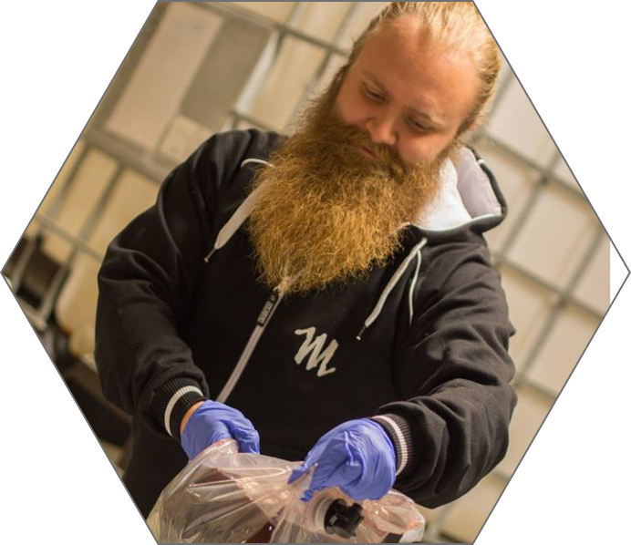

About the blog
My name is Benjamin, and I have a passion for mead. Too many people don't really know what mead is, and there are quite a few meaderies around Europe and around the world by now. They are all hard-working like bees, and they deserve more attention than they get. I hope with this blog I can shed some light on what goes on in the mead bees-knees.